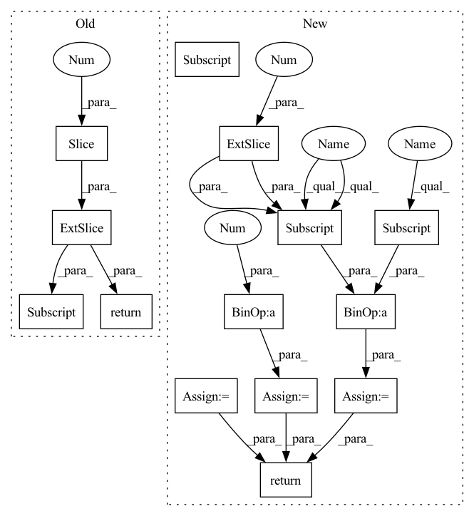

Pattern ID :27415

Before Change
A = box_a.size(0)
B = box_b.size(0)
anchor_centers = box_b[:, :2].unsqueeze(0).expand(A, B, 2) // Shape [A, B, 2]
gt_boxes = box_a.unsqueeze(1).expand(A, B, 4)
left_right = torch.stack((anchor_centers[:,:,0]-gt_boxes[:,:,0], // x-x1
gt_boxes[:,:,2]-anchor_centers[:,:,0]), 2) // x2-x
left_right = (left_right.min(dim=-1)[0] / left_right.max(dim=-1)[0])
left_right[left_right < 0] = 0 // points outside gt boxes
top_bottom = torch.stack((anchor_centers[:,:,1]-gt_boxes[:,:,1], // y-y1
gt_boxes[:,:,3]-anchor_centers[:,:,1]), 2) // y2-y
top_bottom = (top_bottom.min(dim=-1)[0] / top_bottom.max(dim=-1)[0])
top_bottom[top_bottom < 0] = 0 // points outside gt boxes
return torch.min(left_right, top_bottom)
def get_foreground(truths, priors, mask, idx):
After Change
gt_boxes[:,:,3]-ac_boxes[:,:,1]), 2) // y2-y
top_bottom = (top_bottom.min(dim=-1)[0] / top_bottom.max(dim=-1)[0])
top_bottom[top_bottom < 0] = 0 // points outside gt boxes
centerness = torch.min(left_right, top_bottom)
gt_sizes = torch.sqrt((gt_boxes[:,:,2]-gt_boxes[:,:,0]) * (gt_boxes[:,:,3]-gt_boxes[:,:,1]))
thresh = ac_boxes[:,:,2] / 2.0
thresh[thresh == thresh.min()] = 0.0
centerness[gt_sizes <= thresh] = 0.0
thresh = ac_boxes[:,:,3] * 2.0
thresh[thresh == thresh.max()] = 1.0
centerness[gt_sizes >= thresh] = 0.0
return centerness
def get_foreground(truths, priors, mask, idx, multi_anchor=True):
In pattern: SUPERPATTERN
Frequency: 3
Non-data size: 14
Instances
Fragment ID: 81533357
Project Name: zhangheng19931123/mutualguide
Commit Name: 85219f93a8d5b54cb3ed9f06d86bb64d3f6d3552
Time: 2021-10-02
Author: heng.zhang@irisa.fr
File Name: utils/box/box_utils.py
M Class Name: AnonimousClass
N Class Name: AnonimousClass
M Method Name: centerness(2)
N Method Name: centerness(2)
M Parent Class:
N Parent Class:
M File Name: utils/box/box_utils.py
N File Name: utils/box/box_utils.py
M Start Line: 81
M End Line: 91
N Start Line: 41
N End Line: 59
'>
Before Change
A = box_a.size(0)
B = box_b.size(0)
anchor_centers = box_b[:, :2].unsqueeze(0).expand(A, B, 2) // Shape [A, B, 2]
gt_boxes = box_a.unsqueeze(1).expand(A, B, 4)
left_right = torch.stack((anchor_centers[:,:,0]-gt_boxes[:,:,0], // x-x1
gt_boxes[:,:,2]-anchor_centers[:,:,0]), 2) // x2-x
left_right = (left_right.min(dim=-1)[0] / left_right.max(dim=-1)[0])
left_right[left_right < 0] = 0 // points outside gt boxes
top_bottom = torch.stack((anchor_centers[:,:,1]-gt_boxes[:,:,1], // y-y1
gt_boxes[:,:,3]-anchor_centers[:,:,1]), 2) // y2-y
top_bottom = (top_bottom.min(dim=-1)[0] / top_bottom.max(dim=-1)[0])
top_bottom[top_bottom < 0] = 0 // points outside gt boxes
return torch.min(left_right, top_bottom)
def get_foreground(truths, priors, mask, idx):
After Change
A = box_a.size(0)
B = box_b.size(0)
ac_boxes = box_b.unsqueeze(0).expand(A, B, 4)
gt_boxes = box_a.unsqueeze(1).expand(A, B, 4)
left_right = torch.stack((ac_boxes[:,:,0]-gt_boxes[:,:,0], // x-x1
gt_boxes[:,:,2]-ac_boxes[:,:,0]), 2) // x2-x
left_right = (left_right.min(dim=-1)[0] / left_right.max(dim=-1)[0])
left_right[left_right < 0] = 0 // points outside gt boxes
top_bottom = torch.stack((ac_boxes[:,:,1]-gt_boxes[:,:,1], // y-y1
gt_boxes[:,:,3]-ac_boxes[:,:,1]), 2) // y2-y
top_bottom = (top_bottom.min(dim=-1)[0] / top_bottom.max(dim=-1)[0])
top_bottom[top_bottom < 0] = 0 // points outside gt boxes
centerness = torch.min(left_right, top_bottom)
gt_sizes = torch.sqrt((gt_boxes[:,:,2]-gt_boxes[:,:,0]) * (gt_boxes[:,:,3]-gt_boxes[:,:,1]))
thresh = ac_boxes[:,:,2] / 2.0
thresh[thresh == thresh.min()] = 0.0
centerness[gt_sizes <= thresh] = 0.0
thresh = ac_boxes[:,:,3] * 2.0
thresh[thresh == thresh.max()] = 1.0
centerness[gt_sizes >= thresh] = 0.0
return centerness
def get_foreground(truths, priors, mask, idx, multi_anchor=True):
'>
Fragment ID: 81533359
Project Name: zhanghengdev/mutualguide
Commit Name: 85219f93a8d5b54cb3ed9f06d86bb64d3f6d3552
Time: 2021-10-02
Author: heng.zhang@irisa.fr
File Name: utils/box/box_utils.py
M Class Name: AnonimousClass
N Class Name: AnonimousClass
M Method Name: centerness(2)
N Method Name: centerness(2)
M Parent Class:
N Parent Class:
M File Name: utils/box/box_utils.py
N File Name: utils/box/box_utils.py
M Start Line: 81
M End Line: 91
N Start Line: 41
N End Line: 59
'>
Before Change
angles = np.arctan2(flows[:, 1], flows[:, 0]) // in radians, [-pi, pi]
// Normalize form 0 to 255
angles_normalized = (((angles + np.pi) / (np.pi*2.)) * 255).astype(int)
rgb = cm.hsv(angles_normalized)[:, :-1] // hsv is cyclic
magnitude = np.sqrt(np.sum(flows**2, axis=1))
magnitude /= magnitude.max()
return rgb * magnitude[:, np.newaxis]
def update_scan(self):
After Change
mag, ang = cv2.cartToPolar(flows[..., 0], flows[..., 1])
hsv[..., 0] = ang * 180 / np.pi / 2
hsv[..., 2] = cv2.normalize(mag, None, 0, 255, cv2.NORM_MINMAX)
rgb = cv2.cvtColor(hsv, cv2.COLOR_HSV2RGB)
rgb = rgb[:, 0, :] / 255. // Normalize to 1
rgb[rgb < 0.2] = 0.2 // Just for visualize not moving points
return rgb
def update_scan(self):
// first open data
'>
Fragment ID: 81533369
Project Name: jabb0/fastflow3d
Commit Name: ef8013b20d8d6b8f7090a5d6ba114bc64617682c
Time: 2021-07-07
Author: carlosmn1997@gmail.com
File Name: visualization/laserscanvis.py
M Class Name: LaserScanVis
N Class Name: LaserScanVis
M Method Name: flow_to_rgb(2)
N Method Name: flow_to_rgb(2)
M Parent Class:
N Parent Class:
M File Name: visualization/laserscanvis.py
N File Name: visualization/laserscanvis.py
M Start Line: 86
M End Line: 92
N Start Line: 82
N End Line: 93